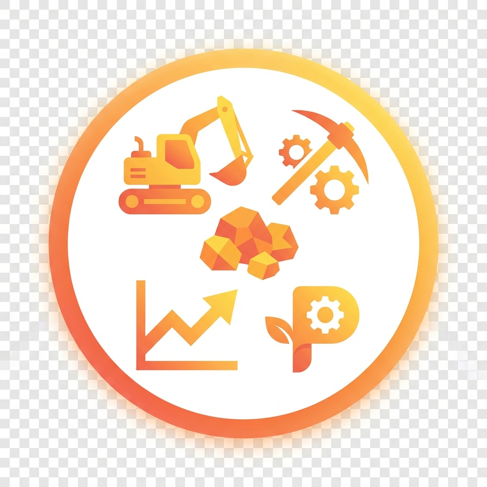
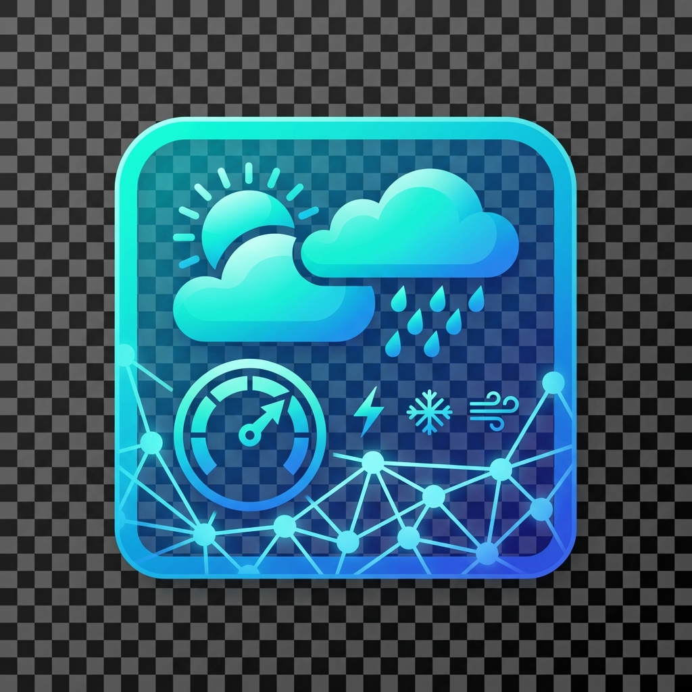

Transforming data into actionable insights through advanced analytics, machine learning, and interactive visualizations
Live Projects
Powered
Analytics
Explore my portfolio of data science and analytics solutions
Comprehensive marketing analysis tools featuring customer segmentation, campaign optimization, ROI tracking, and predictive analytics for data-driven marketing decisions.
Powerful data analysis platform with statistical modeling, interactive visualizations, trend analysis, and automated reporting capabilities for comprehensive data insights.

Specialized analytics platform for mining operations featuring production tracking, resource optimization, geospatial analysis, and operational efficiency monitoring.

Machine learning-powered weather prediction system with real-time forecasting, historical analysis, and climate pattern recognition for accurate weather insights.
Comprehensive economic analysis tools covering market dynamics, supply-demand modeling, equilibrium analysis, and economic indicators for informed decision-making.
Deep dives into selected projects showcasing problem-solving approach and impact
Marketing teams struggled with fragmented data across multiple channels, leading to inefficient campaign management and inability to measure true ROI.
Developed a unified analytics dashboard integrating data from multiple sources with ML-powered customer segmentation, campaign optimization algorithms, and predictive analytics for future performance.
Agricultural operations needed accurate local weather forecasting to optimize planting, harvesting, and resource allocation decisions.
Built ML model combining historical weather data with real-time API feeds, using deep learning for pattern recognition and time-series forecasting.
Complex economic modeling required for policy decisions, but existing tools were either too simplistic or too complex for practical use.
Created interactive platform with supply-demand analysis, market equilibrium calculations, and economic indicator tracking with real-time visualization.
A passionate data scientist and analytics professional with a unique blend of engineering and economics expertise. With dual degrees in Computer Engineering (BScE) and Economics (S.E), I bring a multidisciplinary approach to solving complex business and technical challenges through data-driven solutions.
My journey in data science combines rigorous technical skills from engineering with strategic business insights from economics, enabling me to bridge the gap between technical implementation and business value. I specialize in developing end-to-end analytics solutions that transform raw data into actionable intelligence.
This portfolio showcases my expertise across diverse domains including marketing analytics, mining operations, weather forecasting, and economic modeling. Each project demonstrates my commitment to creating robust, scalable, and user-friendly analytics platforms.
Interactive visualization of my core competencies and expertise levels
Evolution of my technical stack and career progression
Started with core data science fundamentals
Advanced into ML/AI and web development
Full-stack data science with production deployment
Available for freelance projects and full-time opportunities
Remote, Hybrid, or On-site
Within 24 hours
Open to International Projects